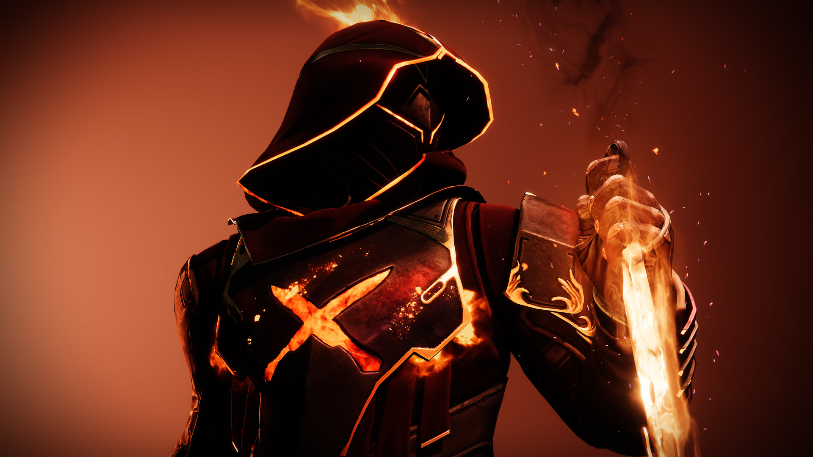
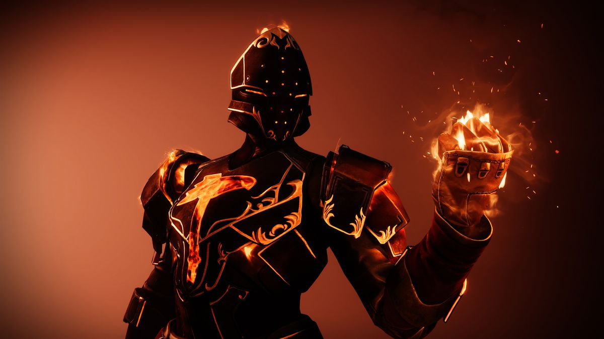

Estase
Arcano - Esgrimista Áureo
Erga-se. Mais perto, mais perto do sol. Sua vida será restaurada; os três serão como um.
Corra. Veloz, veloz como a Luz. Uma terra queimada se estende abaixo; inimigos fogem do embate.
Um raio incadescente; contemple o caminho do poder.
Erga-se. Mais perto, mais perto do fogo. Minhas asas jamais derreterão. Elas já estão em chamas.
Caçador - Regressante
Que tocaia mais chifrim. Ele está recostado no meu Pardal, a insegurança estampada no rosto, pronto para entrar em ação a qualquer momento. Os capangas flanqueiam, todos os olhos dardejando, procurando encrenca, procurando por mim.
Eles tentam estreitar os olhos, escapar da claridade, mas não vai rolar. Eu me lembro de quando costumava tapar os olhos contra o sol, quando tentava espreitar nas sombras. Não preciso mais dessas coisas.
Eu esvazio o copo e me levanto, alongando as mãos cansadas. O sol brilha no cano da pistola dele; vai ser rápido, dá pra ver. O grupo tá ficando agitado. Onde tem impaciência, tem imprecisão. Isso eu não perdoo, não.
Dou um passo na claridade e é como se eu voltasse a respirar. Todos juntos, eles se empertigam, alertas, como se eu já não os estivesse observando há vinte minutos. O grandalhão tira o traseiro do meu veículo. Uma vitória modesta. Então, ele se infla todo, a mão se aproximando da pistola. A minha fica bem firme no coldre.
"Olha só quem decidiu aparecer à luz do dia"
Decidi mesmo. E você vai desejar que eu não tivesse.
Titan - Colosso
O chão rachava e chiava conforme canhões causticantes e fuzis condutores fustigavam minha cobertura de todas as direções. Os gritos de guerra dos Decaídos ecoavam pelas fileiras sem conta - meu desespero cresceu, mas com ele surgiu um sussurro. Uma oferta. Eu fechei os olhos e aceitei.
O frio me abraçou, abafando os sons do combate até torná-los ecos reverberantes, fracos e distantes. Flexionei as manoplas e senti o rugido de geleiras raspando nos ossos do mundo.
Esmurrei a terra com os punhos, e nisso obeliscos gelados irromperam do chão, envolvendo Rebaixados e Vandâlos, transformando-os em efígies inofensivas. Observei os cristais que revestiam meus inimigos, e nas inúmeras refrações vi o medo deles. Senti a vontade desesperada deles de fugir das minhas mãos e, no momento antes da soltura, eu os estilhacei.